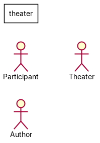
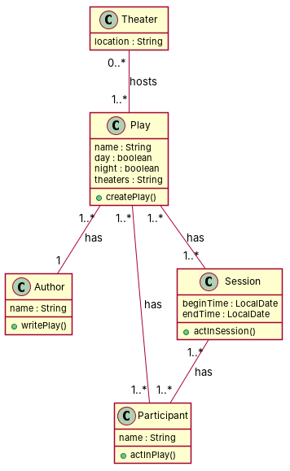

R1: This is a model about theaters. R2: Theaters have a location, and they can play any play, which can be musicals or operas. R3: Plays have a name and can be played either at day or night. R4: Plays are written by one or more authors, who have a name. R5: There are many participants who act in a play, participants also have a name. R6: A particular participant acts in a particular session of a play, where each session begins and ends at a specific time. R7: Both authors and participants are persons. R8: Any play can have any number of participants, and any participant can act in any number of plays. R9: Furthermore, each participant acts in specific sessions of a play, where the session has a begin time and an end time. R10: Regarding authors, one can be the author of more than one play. R11: Besides, plays can take place in more than one theater. R12: Finally, participants can act in any number of plays.
Red, struck-through: removed by ambiguity removal; green: added.
| actors (1 → 1) |
|---|
| participant |
| classes (8 → 8) |
|---|
| Author |
| Musical |
| Opera |
| Participant |
| Person |
| Play |
| Session |
| Theater |
| attributes (7 → 7) |
|---|
| Author.name |
| Participant.name |
| Play.day |
| Play.name |
| Play.night |
| Session.end time |
| Theater.location |
| relations (11 → 11) |
|---|
| association: Participant -> Session |
| association: Theater -> Play |
| generalization: Author -> Person |
| generalization: Musical -> Play |
| generalization: Opera -> Play |
| generalization: Participant -> Person |
| has: Play -> Author |
| has: Play -> Participant |
| has: Play -> Session |
| has: Theater -> Musical |
| has: Theater -> Opera |
| id | req | type | cue | status | readings / explanation |
|---|---|---|---|---|---|
| A1 | R2 | coordination | and+or | resolved | Theaters have a location and can play any play.; Theaters have a location, and they can play any play. Both readings are supported by the text, but the second one is more explicit. |
| A2 | R2 | quantifier | any | resolved | Theaters can play any play.; Theaters can play any play, which can be musicals or operas. Both readings are supported by the text, but the second one is more explicit. |
| A3 | R3 | coordination | either/or | resolved | Plays have a name and can be played either at day or night.; Plays have a name, and can be played either at day or night. Both readings are supported by the text, but the second one is more explicit. |
| A4 | R3 | actor | passive 'played' without agent | open | Plays have a name and can be played either at day or night.; Plays have a name, and can be played either at day or night. The text does not specify an actor, so this is a terminological ambiguity. |
| A5 | R4 | quantifier | one or more | resolved | Plays are written by one or more authors.; Plays are written by one or more authors, who have a name. Both readings are supported by the text, but the second one is more explicit. |
| A6 | R5 | quantifier | many | resolved | There are many participants who act in a play.; There are many participants, who act in a play. Both readings are supported by the text, but the second one is more explicit. |
| A7 | R8 | quantifier | Any | resolved | Any play can have any number of participants, and any participant can act in any number of plays.; Any play can have any number of participants, and any participant can act in any number of plays. Both readings are supported by the text, but the second one is more explicit. |
| A8 | R9 | coordination | modifier scope: time | resolved | Each participant acts in specific sessions of a play, where the session has a begin time and an end time.; Each participant acts in specific sessions of a play, where the session has a begin time and an end time. Both readings are supported by the text, but the second one is more explicit. |
| A9 | R12 | quantifier | any | resolved | Participants can act in any number of plays.; Participants can act in any number of plays. Both readings are supported by the text, but the second one is more explicit. |


"""Code skeleton generated from the shared model of D4/theater.
Every class and method records the requirement(s) it traces to."""
from __future__ import annotations
import dataclasses as _dc
import enum as _enum
import typing as _t
@_dc.dataclass
class Theater:
"""Source: R1"""
location: _t.Optional[str] = None
plays: _t.List["Play"] = _dc.field(default_factory=list)
@_dc.dataclass
class Play:
"""Source: R3, R11"""
name: _t.Optional[str] = None
day: _t.Optional[bool] = None
night: _t.Optional[bool] = None
theaters: _t.Optional[str] = None
author: _t.Optional["Author"] = None
participants: _t.List["Participant"] = _dc.field(default_factory=list)
sessions: _t.List["Session"] = _dc.field(default_factory=list)
def createPlay(self) -> None:
"""Operation."""
raise NotImplementedError
@_dc.dataclass
class Author:
"""Source: R4, R10"""
name: _t.Optional[str] = None
def writePlay(self) -> None:
"""Operation."""
raise NotImplementedError
@_dc.dataclass
class Participant:
"""Source: R5, R12"""
name: _t.Optional[str] = None
def actInPlay(self) -> None:
"""Operation."""
raise NotImplementedError
@_dc.dataclass
class Session:
"""Source: R6, R9"""
beginTime: _t.Optional[str] = None
endTime: _t.Optional[str] = None
participants: _t.List["Participant"] = _dc.field(default_factory=list)
def actInSession(self) -> None:
"""Operation."""
raise NotImplementedError
| python_compiles | True |
|---|---|
| java_compiles | True |
| attribute_mismatches | 0 |
| method_mismatches | 0 |
| use_cases | 0 |
| use_cases_without_actor | 0 |
| use_cases_without_method | 0 |
| actors_without_use_case | 3 |
| relations_to_unknown_class | 0 |
| inconsistencies | 3 |
| inconsistency_rate | 0.375 |
| requirement_coverage | 0.75 |
| validator fixes | |
| assumptions for open ambiguities | [{"tag": "A3", "assumption": "Plays can be played either at day or night, as stated in the requirement."}] |
| element | P | R | F1 | TP/FP/FN |
|---|---|---|---|---|
| classes | 1.0 | 0.556 | 0.714 | 5/0/4 |
| attributes | 0.222 | 0.4 | 0.286 | 2/7/3 |
| relations | 0.4 | 0.25 | 0.308 | 2/3/6 |